MADeCa — Guía de instalación y configuración
Instalar MADeCa en el servidor Linux del cliente y dejarlo listo para emitir el Documento Electrónico de Control Administrativo (DeCA) del transporte de mercancías por carretera. Pensada para el técnico que lo instala y para el administrador de la empresa que lo configura.
1. Introducción y propósito
MADeCa emite y gestiona el DeCA, el documento de control que exige la Orden FOM/2861/2012 en cada envío de transporte público de mercancías por carretera, en el formato electrónico que fija la Resolución de 5 de junio de 2026 de la Dirección General de Transporte por Carretera y Ferrocarril (BOE-A-2026-12784): un PDF nativo digital con un código QR que el inspector escanea para descargarlo.
Este paquete instala MADeCa completa, la misma versión que está en servicio, en blanco: sin empresas, usuarios ni DeCA. Se instala en un servidor del cliente con un único script, y el código de la aplicación va compilado.
LICENCIA.txt.2. Características principales
3. Requisitos del sistema
| Elemento | Mínimo | Recomendado / notas |
|---|---|---|
| Sistema operativo | Cualquier Linux x86_64 (Ubuntu, Debian, Rocky, Alma, RHEL, Fedora, openSUSE...) o Windows 10 (2004+), 11 y Windows Server 2022/2025 | Servidor propio, máquina virtual, VPS o PC de la oficina. En Windows se instala sobre WSL2, sin Docker Desktop (apartado 4.5). |
| Procesador | x86_64 (Intel/AMD), 2 núcleos | 4 núcleos si se leen muchos documentos escaneados. El paquete no funciona en ARM (Raspberry Pi, Ampere). |
| Memoria | 2 GB | 4 GB. Con menos de 4 GB y sin memoria de intercambio, el instalador crea 2 GB. |
| Disco | 10 GB libres | 20 GB o más: los DeCA se conservan al menos un año. |
| Software | Ninguno previo | El instalador pone Docker y Docker Compose v2 si no están: del repositorio oficial de Docker o, sin internet, desde el propio paquete (también iptables). |
| Acceso | Usuario con sudo | Por consola o SSH. |
| Internet | No hace falta para instalar | El paquete trae la aplicación, PostgreSQL, Redis, Caddy y Docker. Con el acceso «publico» Caddy pide el certificado a Let's Encrypt. |
Dominio, puertos y HTTPS
El QR del DeCA lo escanea un inspector con su móvil, en carretera. Por eso MADeCa tiene que estar publicado en internet con HTTPS: la URL empieza necesariamente por https://, con TLS 1.2 o superior (Apartado Tercero.1), y debe descargar el PDF sin pedir credenciales (Apartado Tercero.3 y 4). Antes de instalar hace falta:
- Un dominio o subdominio propio, por ejemplo
deca.miempresa.es, con un registro DNS A que apunte a la IP pública del servidor. - Los puertos 80 y 443 (TCP) abiertos desde internet hasta el servidor. Si está detrás de un router, reenvíalos a la IP interna del servidor.
- Que nada más use los puertos 80 y 443 en ese servidor (Apache, nginx...).
El certificado HTTPS lo pide y lo renueva solo Caddy (Let's Encrypt). No hay que comprar nada ni copiar certificados. Basta con que el dominio apunte al servidor y el puerto 80 llegue desde internet.
El instalador pregunta cómo se llega a MADeCa (opción --acceso), para que valga en cualquier configuración:
| Acceso | Cuándo usarlo | Qué hace el instalador |
|---|---|---|
| publico | VPS, o servidor propio de la oficina con el router reenviando 80 y 443 al servidor. | Certificado de Let's Encrypt automático y renovado solo. |
| propio | La empresa tiene su certificado (comprado o de su entidad) para el dominio, por ejemplo detrás de su cortafuegos. | Usa ese certificado (PEM con la cadena completa y clave sin contraseña). Se cambia con madeca.sh certificado. |
| proxy | Ya hay un proxy HTTPS delante (nginx, IIS, Traefik, el del cortafuegos). | No instala Caddy: MADeCa escucha en HTTP en el puerto que digas y tu proxy pone el HTTPS (TLS 1.2 o superior). |
| prueba | Ver la aplicación en la red local antes de publicarla. | Certificado interno. No vale para DeCA reales. |
Si los puertos 80 o 443 del equipo ya están ocupados, elige otros con --puerto-http y --puerto-https (con «publico», el router reenvía los 80/443 de internet a esos puertos).
4. Instalación
Todo se hace con el script madeca.sh del paquete. Queda instalado en /opt/madeca.
4.1 Copiar el paquete al servidor
Desde el equipo donde tengas el paquete (en Windows sirven scp de PowerShell o WinSCP):
scp madeca-0.4.4.tar.gz usuario@IP-DEL-SERVIDOR:/tmp/
En el servidor, descomprímelo:
cd /tmp tar xzf madeca-0.4.4.tar.gz cd madeca-0.4.4
4.2 Ejecutar el instalador
sudo ./madeca.sh instalar
El instalador va paso a paso y se detiene con un mensaje claro si algo no cumple los requisitos:
- Licencia de uso. Muestra
LICENCIA.txt. EscribeACEPTOpara seguir. - Comprobación del equipo: procesador x86_64, memoria y disco (también dentro de WSL2 en Windows).
- Docker: si no está, lo instala desde su repositorio oficial (
download.docker.com; en Ubuntu, Debian, Rocky, Alma, RHEL y Fedora) o desde la distribución (openSUSE), con Docker Compose v2. Sin internet, o si no hay paquete para el sistema, usa el Docker que trae el paquete (y su iptables si falta). - Datos de la instalación. Pregunta:
- cómo se llega a MADeCa (acceso
publico,propio,proxyoprueba, apartado 3) y, según el caso, el certificado propio o el puerto para tu proxy; comprueba que los puertos estén libres; - el dominio (
deca.miempresa.es); - con «publico», el correo técnico (Let's Encrypt avisa ahí si hay algún problema con el certificado);
- la zona horaria:
peninsula(también Baleares, Ceuta y Melilla) ocanarias. De ella depende la hora impresa en los DeCA.
- cómo se llega a MADeCa (acceso
- Comprobación del dominio (solo «publico»): que apunta a la IP pública de este equipo. Si no, avisa y pregunta si continuar.
- Configuración: crea
/opt/madeca/.envcon claves aleatorias propias de la instalación, y la memoria de intercambio si hace falta. Si el cortafuegos (ufwofirewalld) está activo, abre los puertos; si no hay cortafuegos activo, no lo toca. - Imagen y arranque: carga la aplicación (y PostgreSQL, Redis y Caddy desde el paquete), crea la base de datos y arranca los servicios.
- Comprobación del acceso: espera a que el certificado esté listo y comprueba que la aplicación responde (con «proxy», en el puerto HTTP para tu proxy).
- Empresa y administrador. Pregunta el nombre o razón social, el NIF/CIF y el correo del administrador, y muestra su contraseña inicial.
Así queda una instalación completa (salida real en un Ubuntu 24.04 recién instalado, sin Docker, con la empresa ficticia del ejemplo y con el acceso «prueba»; con «publico» aparece además el paso 4/9 Comprobación del dominio y el certificado es el de Let's Encrypt). Las líneas debconf: ..., si salen, son avisos normales de los sistemas mínimos, sin importancia:
$ sudo ./madeca.sh instalar # (respuestas: acceso, dominio, correo si es «publico», zona, empresa, NIF y administrador) MADeCa 0.4.4 — Masoft.es. == Condiciones de uso Aceptadas (--acepto-condiciones). == 1/9 Comprobación del equipo Sistema: Ubuntu 24.04.5 LTS Memoria: 15937 MB Disco libre: 905 GB == 2/9 Docker debconf: delaying package configuration, since apt-utils is not installed Instalando Docker desde su repositorio oficial (download.docker.com)... debconf: delaying package configuration, since apt-utils is not installed Docker instalado: Docker version 29.9.1, build dfc520d == 3/9 Datos de la instalación [AVISO] MODO PRUEBA: certificado interno, NO vale para DeCA reales (el móvil del inspector no lo aceptaría). == 5/9 Ficheros en /opt/madeca == 6/9 Configuración, memoria y cortafuegos .env creado con claves aleatorias. No hay cortafuegos activo en el equipo (ufw/firewalld): no se toca. Comprueba tu cortafuegos o router (80 443). Cargando la imagen de MADeCa (puede tardar unos minutos)... Cargando PostgreSQL, Redis y Caddy desde el paquete... == 7/9 Base de datos y arranque Base de datos preparada. Servicios en marcha. == 8/9 Comprobación del acceso MADeCa responde en https://deca.transcanarias.test (certificado de prueba) == 9/9 Empresa y administrador Empresa: TransCanarias LogÃ�stica SL (B00419028) Id de la empresa: f5d8bdd8-d232-4be2-9e92-e83d3c505232 Administrador: admin@transcanarias.test Contraseña: •••••••••••••••• (aquí sale la contraseña) Guárdala ahora: no se vuelve a mostrar. Para cambiarla o si se pierde: sudo /opt/madeca/madeca.sh clave admin@transcanarias.test (Copia en /opt/madeca/estado/ALTA.txt, solo para root: bórrala cuando la hayas guardado.) Instalación terminada: https://deca.transcanarias.test En los equipos de la red, deca.transcanarias.test debe apuntar a la IP de este equipo (DNS interno o fichero hosts). Siguientes pasos (ver la guía): entrar con el administrador, completar los datos de la empresa, subir el certificado de firma si se usa, crear los usuarios y configurar las fuentes de datos. Desde ahora usa: sudo /opt/madeca/madeca.sh <orden>
/opt/madeca/estado/ALTA.txt, legible solo por root: bórrala cuando la tengas guardada. Si se pierde, se genera otra con sudo /opt/madeca/madeca.sh clave CORREO.4.3 Comprobar
sudo /opt/madeca/madeca.sh estado
Los seis servicios deben estar running: app (la aplicación), caddy (HTTPS), db (PostgreSQL), redis, hotfolder-watcher (carpeta compartida) y conectores (fuentes de datos). Después abre https://TU-DOMINIO en el navegador: debe salir la pantalla de acceso con el candado del navegador correcto.
Comprueba también desde un móvil con datos (fuera de la red de la empresa) que la dirección abre: así la verá el inspector.
4.4 Instalación desatendida
Para instalar sin preguntas (por un script de administración o un sistema de despliegue), pasa todas las respuestas como opciones. Con --acepto-condiciones se acepta la licencia de LICENCIA.txt:
sudo ./madeca.sh instalar --acepto-condiciones \ --dominio deca.miempresa.es --correo it@miempresa.es --zona peninsula \ --empresa "Transportes Ejemplo SL" --nif B00345678 --admin admin@miempresa.es
--acceso prueba (o --prueba-local) se instala con un certificado interno, sin dominio público. Sirve para ver la aplicación antes de publicarla, no para emitir DeCA reales: el navegador avisa del certificado y el móvil de un inspector no lo aceptaría.# Certificado propio, con los puertos 8080/8443 porque 80/443 los usa otro servicio sudo ./madeca.sh instalar --acceso propio --cert /root/certificado.pem --clave /root/clave.pem \ --puerto-http 8080 --puerto-https 8443 --dominio deca.miempresa.es ... # Detrás del proxy de la empresa (nginx, IIS...), que está en otro equipo sudo ./madeca.sh instalar --acceso proxy --puerto-app 8080 --ip-app 0.0.0.0 --ip-proxy 10.0.0.5 --dominio deca.miempresa.es ...
4.5 Windows (servidor o PC de la oficina)
En Windows 10 (versión 2004 o posterior), Windows 11 o Windows Server 2022/2025 de 64 bits, MADeCa se instala dentro de WSL2 (el Subsistema de Windows para Linux) en una Ubuntu propia llamada MADeCa. No hace falta Docker Desktop ni la Microsoft Store.
- Copia la carpeta
INSTALLal equipo y haz doble clic enINSTALAR_EN_WINDOWS.bat. Pide permisos de administrador. - Si WSL2 no estaba activado, lo activa y pide reiniciar: reinicia y vuelve a lanzarlo. Necesita la virtualización activada en la BIOS/UEFI (en una máquina virtual, la virtualización anidada).
- Después hace las mismas preguntas que en Linux. Las opciones se pasan igual:
INSTALAR_EN_WINDOWS.bat instalar --acceso prueba --dominio madeca.local. - Al terminar crea la tarea programada MADeCa - arranque: MADeCa arranca solo al encender el equipo, aunque nadie inicie sesión. También reenvía los puertos de Windows a MADeCa y los abre en el cortafuegos de Windows, para entrar desde otros equipos de la red.
INSTALAR_EN_WINDOWS.bat estado # cualquier orden de madeca.sh: copia, parar, arrancar, registros, clave CORREO... INSTALAR_EN_WINDOWS.bat desinstalar # quita tarea, puertos y cortafuegos; borra los datos solo si escribes BORRAR DATOS
Las copias quedan en \\wsl.localhost\MADeCa\opt\madeca\copias (se abre desde el Explorador de Windows).
4.6 Sin internet
El paquete lleva todo: la aplicación, PostgreSQL, Redis, Caddy, Docker, Docker Compose e iptables. En un equipo sin salida a internet, añade --sin-internet para que no intente descargar nada:
sudo ./madeca.sh instalar --sin-internet --acceso propio ...
En Windows, la Ubuntu para WSL2 va en la carpeta windows: tampoco necesita internet (salvo para activar WSL2 si nunca se activó).
5. Configuración inicial
Las capturas de esta guía son de una instalación de prueba con TransCanarias Logística SL, una empresa ficticia: sus datos, NIF y matrículas (serie Z, aún no emitida) son inventados.
5.1 Primer acceso y contraseña
Abre https://TU-DOMINIO y entra con el correo del administrador y la contraseña inicial.
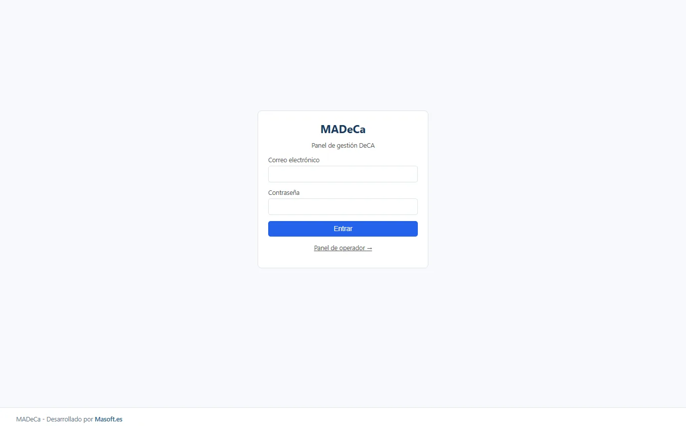
Las contraseñas las genera el servidor: sudo /opt/madeca/madeca.sh clave CORREO da una nueva a cualquier usuario (se muestra una vez y cierra sus sesiones abiertas). El administrador de la empresa también puede poner la contraseña de cada usuario al crearlo en Usuarios.
Al entrar se ve el Inicio: lo pendiente de revisar, lo que está en tránsito y lo que necesita atención.
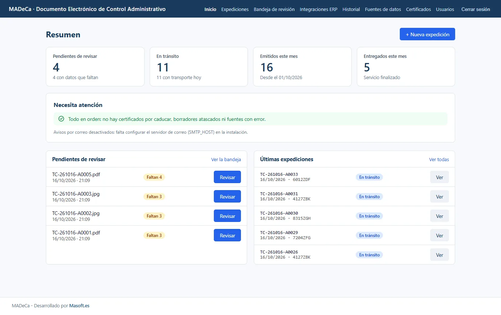
5.2 Usuarios y roles
En Usuarios el administrador crea las cuentas del resto del personal. Cada persona debe tener la suya: la actividad de cada expedición registra quién hizo qué.
| Rol | Puede |
|---|---|
| admin | Todo: usuarios, certificados, claves de API, fuentes de datos e historial. |
| operador | Emitir, modificar y dar por entregados DeCA, revisar la bandeja y exportar. |
| lectura | Consultar, sin cambiar nada. |
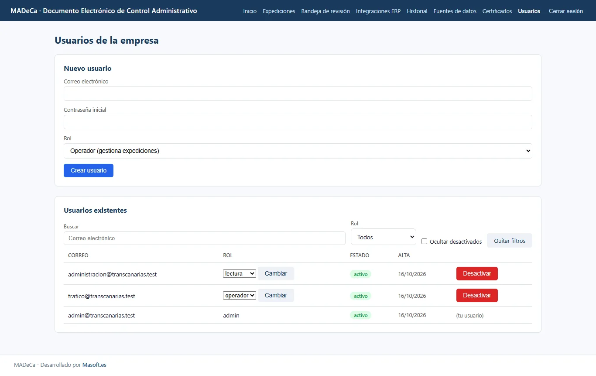
5.3 Certificado de firma (si se usa)
La firma electrónica avanzada solo es obligatoria en los DeCA con finalidad contractual (Apartado Cuarto). Sin certificado, el resto se emite igualmente, sin firmar. Si la empresa los necesita, sube en Certificados su certificado .p12/.pfx con su contraseña: se guarda cifrado y la aplicación avisa antes de que caduque.
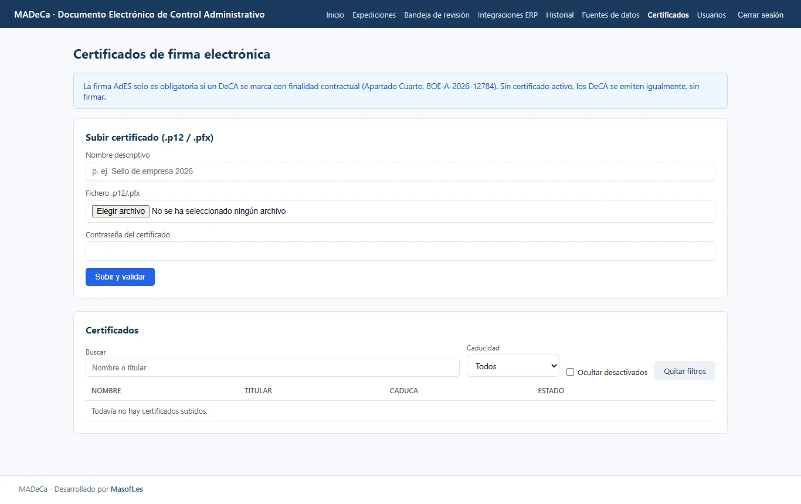
5.4 Conectar el ERP por API
Si el programa de gestión puede llamar a una API, crea en Integraciones ERP una clave para él. La clave completa se muestra una sola vez: cópiala en la configuración del ERP. Se envía en la cabecera X-API-Key.
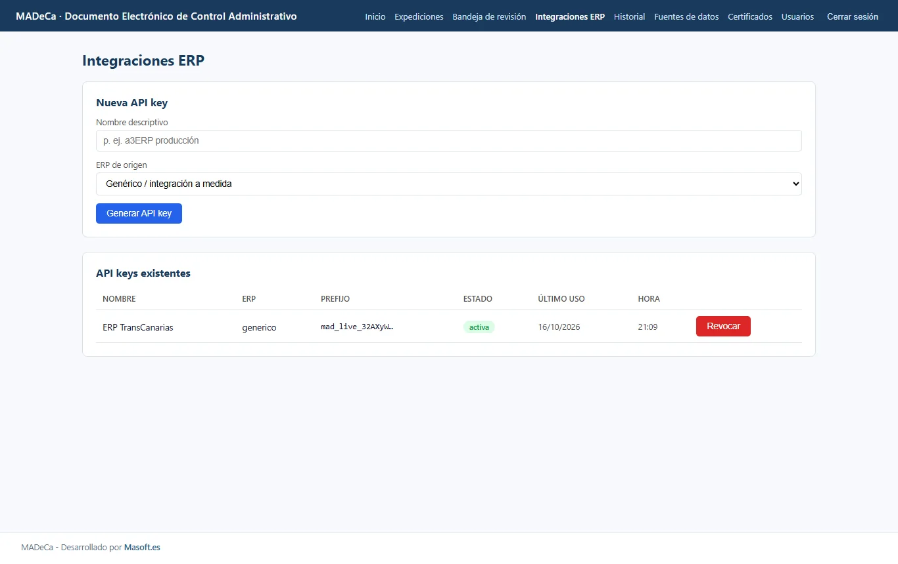
| Petición | Para qué |
|---|---|
POST /api/v1/expediciones/datos | El ERP manda los datos (JSON) y MADeCa redacta el DeCA. |
POST /api/v1/expediciones | El ERP manda su propio PDF (albarán, carta de porte) y MADeCa le estampa el QR. |
POST /api/v1/expediciones/{id}/modificaciones | Modificación durante el servicio (Apartado Quinto). |
PATCH /api/v1/expediciones/{id}/finalizar | Servicio terminado (entregado o anulado). |
GET /api/v1/expediciones/{id}/pdf y /qr.png | Copia para el conductor (PDF o solo el QR). |
POST /api/v1/borradores/documento | Un documento escaneado o una foto a la bandeja de revisión. |
La descripción completa de cada petición (especificación OpenAPI) está en https://TU-DOMINIO/openapi.json: se abre con cualquier herramienta compatible con OpenAPI, como Postman o Swagger Editor.
5.5 Carpeta compartida
Para un ERP que solo sabe dejar ficheros en una carpeta: lo que se copie en
/opt/madeca/intercambio/hotfolder/incoming/ID-DE-LA-EMPRESA/generico/pdf/ # PDF + .json con los metadatos /opt/madeca/intercambio/hotfolder/incoming/ID-DE-LA-EMPRESA/generico/datos/ # .json o .csv con los datos
se emite solo. Lo procesado pasa a processed/ y lo que falla, a errores/ con un fichero que explica el motivo. El identificador de la empresa lo muestra sudo /opt/madeca/madeca.sh estado. Los ficheros deben pertenecer al usuario 1000 (sudo chown -R 1000:1000 /opt/madeca/intercambio) para que MADeCa pueda moverlos.
5.6 Fuentes de datos
En Fuentes de datos el administrador conecta carpetas en la nube (SharePoint/OneDrive, Google Drive, Dropbox), servidores SFTP, la carpeta /opt/madeca/intercambio/nas/ID-DE-LA-EMPRESA del propio servidor, o un ERP (Business Central, Odoo; SAP Business One y Holded sin verificar todavía con instalaciones reales). Los documentos que lleguen se leen y quedan en la bandeja de revisión: nunca se emite nada sin que una persona lo confirme.
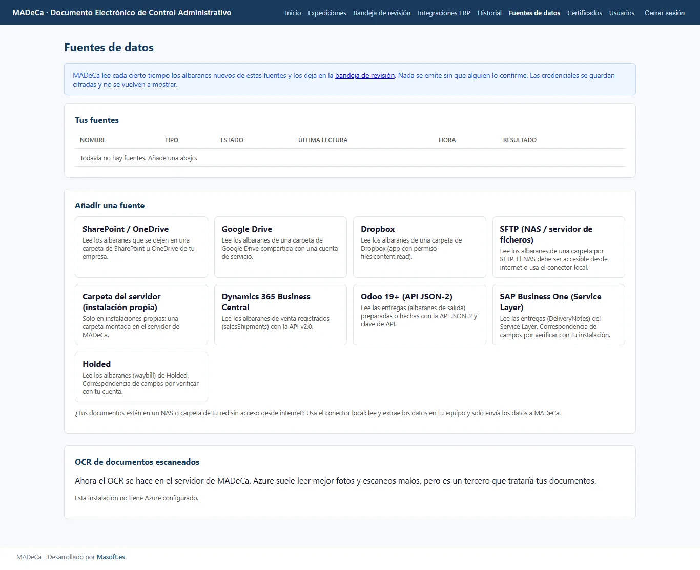
FUENTES_PERMITIR_RED_PRIVADA=true en /opt/madeca/.env y reinicia (sudo /opt/madeca/madeca.sh reiniciar).5.7 Avisos por correo (opcional)
MADeCa puede mandar cada día a los administradores un resumen de lo que necesita atención (certificados por caducar, borradores atascados, fuentes con error). Para activarlo, quita el # de las líneas SMTP_* de /opt/madeca/.env, rellénalas con los datos del servidor de correo de la empresa y reinicia.
5.8 Varias empresas en la misma instalación
Una instalación puede atender a más de una empresa (por ejemplo, las de un mismo grupo). Cada una tiene sus usuarios, sus DeCA, sus certificados y su carpeta compartida, separados de las demás. Hay dos formas de darlas de alta:
# Desde la consola del servidor (pregunta razón social, NIF y correo del administrador): sudo /opt/madeca/madeca.sh alta # O desde el navegador, en https://TU-DOMINIO/superadmin, con un superadministrador: sudo /opt/madeca/madeca.sh superadmin operador@miempresa.es
El superadministrador gestiona las empresas (alta, activar y desactivar) y sus usuarios (alta, rol, contraseña y desactivación); no ve sus DeCA. Si una sola empresa usa la instalación, no hace falta crearlo.
6. La aplicación en el día a día
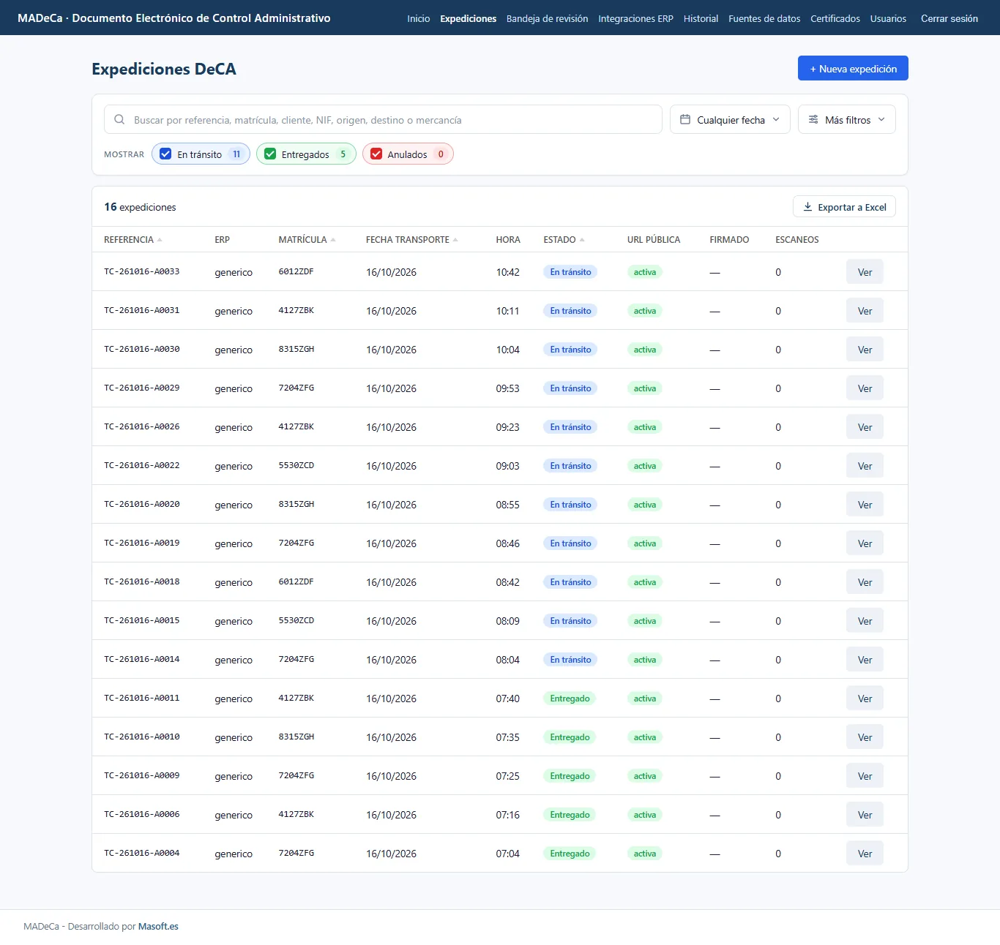
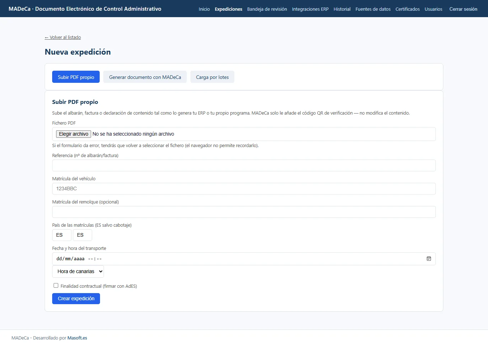
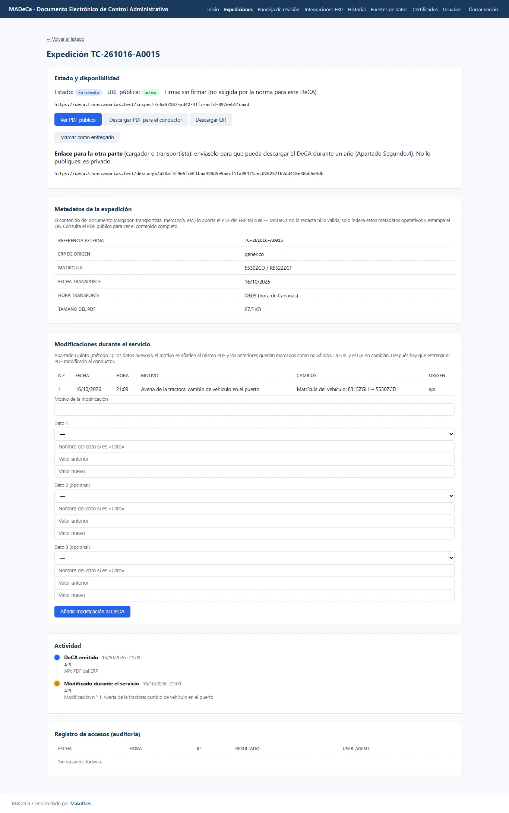
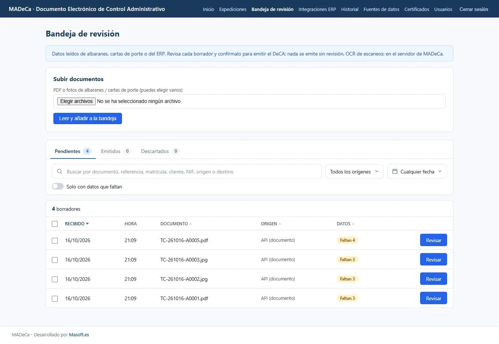
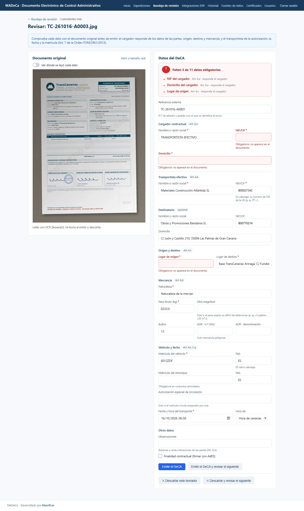
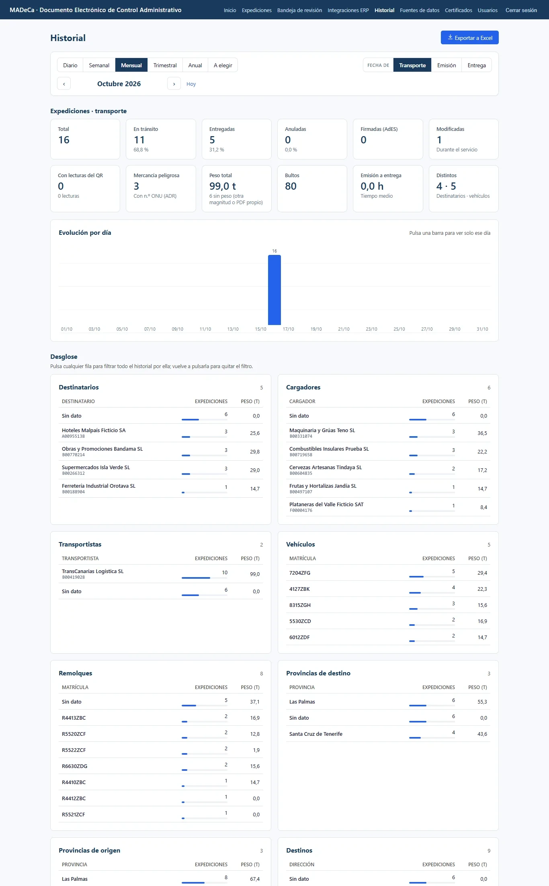
7. Mantenimiento
Copias de seguridad
sudo /opt/madeca/madeca.sh copia
Crea en /opt/madeca/copias/ un único fichero con la base de datos, los PDF, los certificados y las claves de la instalación. Llévalo fuera del servidor (otro equipo, NAS, nube) y guárdalo en lugar seguro: contiene las claves. Los DeCA deben conservarse al menos un año (Apartado Segundo.4). Para hacerla cada noche, por ejemplo a las 2:30, añade con sudo crontab -e:
30 2 * * * /opt/madeca/madeca.sh copia >> /var/log/madeca-copia.log 2>&1
Las copias no se borran solas: revisa de vez en cuando el espacio de /opt/madeca/copias/.
Restaurar
sudo /opt/madeca/madeca.sh restaurar /opt/madeca/copias/madeca-20261016-195632.tar.gz
Sustituye todos los datos actuales por los de la copia (pide escribir RESTAURAR). Sirve también para pasar a otro servidor: instala allí el mismo paquete con el mismo dominio y restaura la copia.
Actualizar a una versión nueva
tar xzf madeca-NUEVA.tar.gz && cd madeca-NUEVA sudo ./madeca.sh actualizar
Hace antes una copia de seguridad, carga la versión nueva, conserva claves y datos, y aplica los cambios de la base de datos. No admite volver a una versión anterior.
Servidor
Mantén el sistema al día con su gestor de paquetes (apt, dnf, zypper; en Windows, Windows Update y wsl --update). Los servicios arrancan solos al reiniciar el servidor.
8. Referencia: órdenes y configuración
Órdenes de madeca.sh
| Orden | Qué hace |
|---|---|
| instalar | Instalación completa (desde la carpeta del paquete). |
| actualizar | Copia de seguridad y actualización (desde la carpeta del paquete nuevo). |
| estado | Servicios, versión, empresas y su identificador. |
| alta | Alta de otra empresa y su administrador (la primera se da al instalar). |
| clave CORREO | Contraseña nueva para ese usuario (se muestra una vez; cierra sus sesiones). |
| superadmin CORREO | Crea el superadministrador de /superadmin o le da una contraseña nueva. |
| certificado CERT CLAVE | Cambia el certificado propio (acceso «propio»): comprueba que sea válido y que la clave le corresponda. |
| copia | Copia de seguridad completa en /opt/madeca/copias. |
| restaurar FICHERO | Restaura una copia (sustituye los datos actuales). |
| parar · arrancar · reiniciar | Para, arranca o reinicia los servicios. |
| registros [servicio] | Últimas líneas de registro (app, caddy, db...). |
| desinstalar | Quita los servicios; ofrece una copia antes y conserva los datos salvo que se escriba BORRAR DATOS. |
Opciones de «instalar»
| Opción | Descripción |
|---|---|
| --accesopublico | publico, propio, proxy o prueba (apartado 3). Si falta, se pregunta. |
| --dominioobligatoria | Dominio de MADeCa. Si falta, se pregunta. |
| --correocon «publico» | Correo técnico para Let's Encrypt. |
| --cert, --clavecon «propio» | Certificado (PEM, cadena completa) y su clave privada sin contraseña. |
| --puerto-app, --ip-app8080 · 127.0.0.1 | Con «proxy»: puerto HTTP de MADeCa y dónde escucha (0.0.0.0 si el proxy está en otro equipo). |
| --ip-proxycon «proxy» en otro equipo | IP del proxy (o varias, separadas por comas). Solo las peticiones que llegan de ella pueden indicar la IP real del usuario; sin esto, cualquiera que alcanzase el puerto podría falsearla y saltarse el límite de intentos de acceso. |
| --puerto-http, --puerto-https80 · 443 | Puertos del equipo si 80/443 están ocupados. |
| --sin-internetopcional | No descarga nada: Docker y las imágenes salen del paquete. |
| --zonapeninsula | peninsula o canarias. |
| --empresa, --nif, --adminobligatorias | Razón social, NIF/CIF y correo del administrador. |
| --acepto-condicionesopcional | Acepta LICENCIA.txt sin preguntar (instalación desatendida). |
| --siopcional | Continúa aunque el dominio aún no apunte al servidor. |
| --prueba-localopcional | Igual que --acceso prueba. Solo para probar, no para DeCA reales. |
Ajustes de /opt/madeca/.env
Lo crea el instalador. Tras cambiarlo: sudo /opt/madeca/madeca.sh reiniciar. No cambies las claves (APP_SECRET_KEY, JWT_SECRET_KEY, POSTGRES_PASSWORD): los certificados guardados y la base de datos dependen de ellas.
| Ajuste | Valor | Descripción |
|---|---|---|
| DOMINIO / APP_BASE_URL | el dominio | Dirección pública. Va dentro de cada QR: no se cambia con DeCA vigentes. |
| ZONA_HORARIA | Europe/Madrid o Atlantic/Canary | Hora impresa en los DeCA y la del panel. |
| RETENTION_DAYS | 365 | Días que se conservan los DeCA (mínimo legal: un año). |
| PUBLIC_URL_DEACTIVATION_DAYS | 7 | Días tras el fin del servicio en que la URL del QR deja de descargar (Apartado Tercero.5). |
| FUENTES_PERMITIR_RED_PRIVADA | false | Permite que las fuentes de datos apunten a la red interna. |
| OCR_SIMULTANEOS | 1 | Documentos que se leen a la vez. Súbelo solo con más núcleos. |
| AZURE_DI_ENDPOINT, AZURE_DI_CLAVE | opcional | Lectura de documentos con Azure AI Document Intelligence, solo para las empresas que lo autoricen (tercero que trata los datos: usar un recurso en la UE). |
| SMTP_HOST, SMTP_PUERTO, SMTP_USUARIO, SMTP_CLAVE, SMTP_REMITENTE | opcional | Servidor de correo para los avisos diarios. SMTP_SEGURIDAD: starttls (por defecto), ssl o ninguna. |
9. Ejemplos
Emitir un DeCA desde el ERP (MADeCa redacta el PDF)
curl -X POST https://deca.miempresa.es/api/v1/expediciones/datos \ -H "X-API-Key: mad_live_..." -H "Content-Type: application/json" \ -d '{ "referencia_externa": "ALB-2026-001", "cargador": {"nombre_razon_social": "Cargador Ejemplo SL", "nif_cif": "B00345678", "domicilio": "Calle Industria 14, 28001 Madrid"}, "transportista": {"nombre_razon_social": "Transportes Ejemplo SL", "nif_cif": "B00654327"}, "origen_direccion": "Calle Industria 14, 28001 Madrid", "destino_direccion": "Polígono Sur, parcela 4, 41001 Sevilla", "mercancia": {"naturaleza": "Palés de material eléctrico", "peso_kg": 850.5}, "fecha_transporte": "2026-10-15T08:00:00+02:00", "matricula_vehiculo": "1234BBC" }' # 201: devuelve el id y la url_publica del QR. # 422: datos que faltan o no válidos (la respuesta dice cuáles).
Estampar el QR en el PDF del ERP
curl -X POST https://deca.miempresa.es/api/v1/expediciones -H "X-API-Key: mad_live_..." \ -F referencia_externa=ALB-2026-002 -F matricula_vehiculo=1234BBC \ -F fecha_transporte=2026-10-15T08:00:00+02:00 -F archivo=@albaran.pdf
Ver el estado
sudo /opt/madeca/madeca.sh estado (antes, la tabla de servicios) MADeCa 0.4.4 Empresa: TransCanarias Logística SL (B00419028) · usuarios: 3 · DeCA emitidos: 16 Id de la empresa: 68e39641-ae4f-482e-bea2-23d8ba04e8a6 # el de la carpeta compartida Dirección: https://deca.transcanarias.test
Un usuario ha olvidado su contraseña
sudo /opt/madeca/madeca.sh clave trafico@miempresa.es
10. Resolución de problemas
| Problema | Causa probable | Solución |
|---|---|---|
| El instalador dice que el servidor no es x86_64 | Servidor ARM | Usa un servidor Intel/AMD: la imagen solo existe para x86_64. |
| «El puerto 80 ya lo usa otro programa» | Apache, nginx, IIS u otro servicio web en el equipo | Elige otros puertos (--puerto-http, --puerto-https) o pon MADeCa detrás de ese servicio con --acceso proxy. |
| Windows: «No se pudo activar WSL2» | Virtualización desactivada en la BIOS/UEFI, o máquina virtual sin virtualización anidada | Actívala y vuelve a lanzar INSTALAR_EN_WINDOWS.bat. |
| Windows: «WSL2 activado. REINICIA el equipo» | Primera vez que se usa WSL2 | Reinicia y vuelve a lanzar el .bat: sigue donde lo dejó. |
| Windows: desde otro equipo de la red no abre | El nombre del dominio no apunta a la IP del equipo Windows, o un cortafuegos de red lo corta | Crea el registro en el DNS interno (o el fichero hosts) hacia la IP del equipo Windows; la regla de su cortafuegos ya la crea el instalador. |
| «La clave no corresponde al certificado» o «está caducado» | Ficheros del certificado propio equivocados | Usa el PEM con la cadena completa y su clave; si la clave tiene contraseña, quítasela. |
| «El núcleo de este sistema no admite nf_tables» | Linux muy antiguo y sin iptables | Instala iptables de la distribución y repite. |
| Instalado, pero la dirección no abre o el navegador avisa del certificado | El dominio no apunta al servidor o el puerto 80/443 no llega desde internet; Let's Encrypt no pudo emitir el certificado | Comprueba el registro A y el reenvío de puertos del router; mira madeca.sh registros caddy. Al corregirlo, Caddy lo reintenta solo. |
| Abre en la oficina pero no desde el móvil con datos | Solo funciona en la red interna (DNS interno, sin reenvío de puertos) | El inspector accede desde internet: publica el dominio y los puertos. |
| La API responde 401 | Clave de API mal copiada o revocada | Crea otra en «Integraciones ERP» (solo se muestra una vez). |
| Un DeCA con finalidad contractual da error | No hay certificado de firma activo y vigente | Sube el certificado en «Certificados» (Apartado Cuarto). |
| Los ficheros de la carpeta compartida no se procesan | Ruta incorrecta o permisos | Revisa la ruta con el identificador de estado y ejecuta chown -R 1000:1000 /opt/madeca/intercambio. Mira errores/. |
| Un documento de la bandeja aparece sin datos | Escaneo ilegible | Rellena los datos a mano o vuelve a escanearlo. |
| «Ya hay una empresa con el NIF...» | Se intenta dar de alta otra vez la misma empresa | Cada NIF solo una vez por instalación: mira madeca.sh estado. |
| «Hubo MADeCa X, más nueva que este paquete» o «no se puede volver atrás» | Se intenta instalar o actualizar con un paquete más antiguo que el de los datos del servidor | Usa el paquete de la versión instalada o una posterior: la base de datos de una versión nueva puede no valer con una anterior. |
| Se perdió la contraseña del administrador | — | sudo /opt/madeca/madeca.sh clave CORREO. |
La aplicación no arranca (app no está running) | Base de datos aún arrancando, o disco lleno | madeca.sh registros app; comprueba el espacio con df -h. |
11. Aviso legal
- Los datos de cada DeCA y el cumplimiento de la normativa de transporte: Orden FOM/2861/2012 y Resolución de 5 de junio de 2026 de la Dirección General de Transporte por Carretera y Ferrocarril (BOE-A-2026-12784), incluida la conservación de los DeCA durante al menos un año (Apartado Segundo.4).
- Que el servidor esté disponible para que los inspectores puedan descargar los DeCA durante el servicio (Apartado Tercero).
- Es la responsable del tratamiento de los datos personales que guarde (Reglamento (UE) 2016/679). Si Masoft.es accede a la instalación para darle soporte, lo hace como encargado del tratamiento, con el contrato que exige el art. 28.
- Las referencias a la normativa de esta guía son orientativas: no sustituyen al texto oficial publicado en el BOE ni al asesoramiento profesional.